ヤティカヌコイン集める方法
ヤティカヌコインを集める方法はいくつかあります。
急ぎではない人はウィークリークエストや秘密周回がおすすめ。
今すぐ！！という方はボス周回がいいですよ☆
ヤティカヌのコインって何に使うん？
1250になったら、義務付けられるコイン集め。義務？いや特典！！！ そもそもヤティカヌのコインとは古代森のコインのことです。
闇商人でお買い物、ヤティカヌ装備を買える！
| 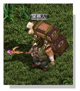 | 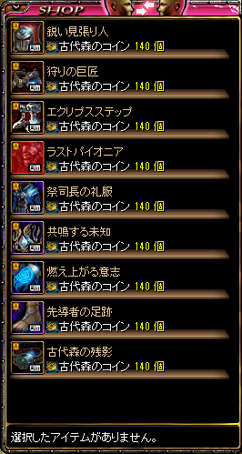 |
|---|
ヤティカヌ装備を交換できたり、(最大強化まで2884枚必要) 闇商人からアイテムの交換できたり。 売っていたら導きの鐘を交換できたりするよ！
ヤティカヌ装備を作成するために周回するひと多し。
装備目的ではなく【闇商人】のために集めてるひとも多いよ。
闇商人のラインアップはこちら！
| 導きの鐘 大人気 綺麗なジョン・マルコのお守り 大人気 タートル召喚状3日券 ドレイクサモンセット3日券 リフレクティングシャード ミニリフレクティングシャード 超越の刃油DX 超越の魔力神秘水DX ポータルスフィア[1日版] |
ソーラーコクーン ペブルコクーン 風の羽 ペイトンのユニークボックス 戦利品ボックス[最上級] 戦利品ボックス[上級] 戦利品ボックス[中級] 戦利品ボックス[一般] 珍貴のオプションお守り箱 神秘のオプションお守り箱 運命のオプションお守り箱 オプションお守り箱 |
|---|
闇商人はガレリオン野営地と戦闘フィールドのランダムな座標に登場します。
闇商人が販売するアイテムは、サーバーオープンから約4時間間隔でリセットされます。
防具作り
防具完成までの必要枚数
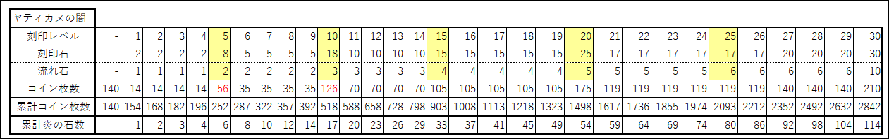コイン枚数2842枚…頑張って集めましょう！
情報提供：@EnmaNeko
えんまねこさんありです！！ヽ(´┏∀┓`)ﾉ
ヤティカヌコインルート（走る）
ヤティカヌのコイン集め。2週間で集めた強者がいたりいなかったり。
沸きに合わせて月の出〜暁まで走りまくるひともいるとか・・・
| 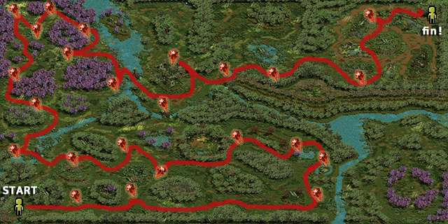 | 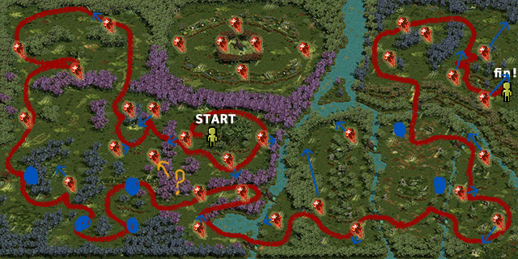 |
|---|---|
| 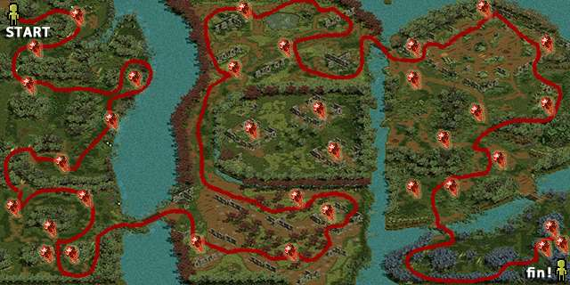 |
アリドネに通う！
毎日0時付近に星降るのアリドネへ通ってコインを集める方法
アリドネは「ヤティカヌ日の出森林」「ヤティカヌ星降る森林」にあります！
「メガンテリオン」「大人アリドネ」がいて毎日0時付近に討伐されます。
午前と午後に一応ありますが、人数がいるのは夜のみ。ソロだと厳しい。
一般的な入口は【星降る 49.82】
| 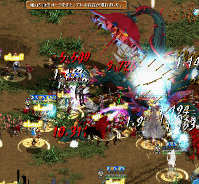 | 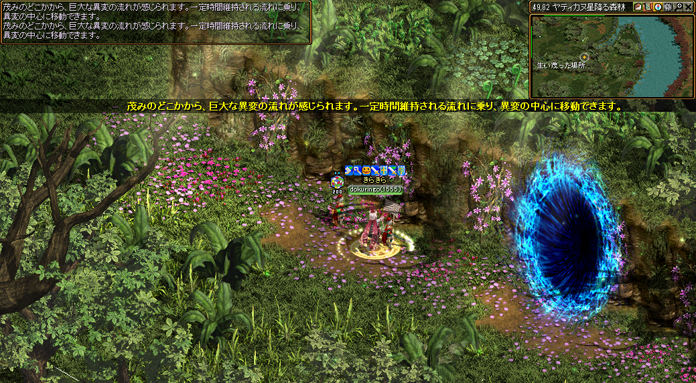 |
|---|
・フィールドボス討伐用専用マップへの入口ポータルが5分間開きます。
・ボス討伐報酬は1日1回のみ
・その日に討伐を行っている場合、入場ポータルの色が赤色に変化します。
・アイテムの報酬権利の初期化は毎日0時に行われます。
月の出秘密に通う！
入口は【月の出】１クリア３枚取得可能。
記憶不可の為毎回走ることになります。
入口に入るのにテクニックが必要。プロは裏に回り込んで入るとか。
 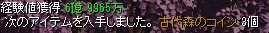
１日２回行くか、
まとめて１４回を日曜日に？１クリア３枚もらえて効率的！！
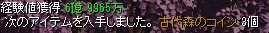
１日２回行くか、
まとめて１４回を日曜日に？１クリア３枚もらえて効率的！！
秘密クリア方法
妖精に選択されますが、一番簡単な問題が効率的で簡単で安全。
・一番簡単な問題を選ぶ。
・一番上でおねがいします。
・倒して石を触るを繰り返し。
大体１分くらいでクリア可能！
秘密前が記憶できないので毎回走りにいくのがちょっと面倒。。。
ウィークリークエスト(週1回)
ヤティカヌのウィークリークエストは【73.13】のリヤンからクエストを受けれるよ。
・クエストは月曜日更新
・報酬はコイン４０枚
・ヤティカヌのモンスターならどこでも！
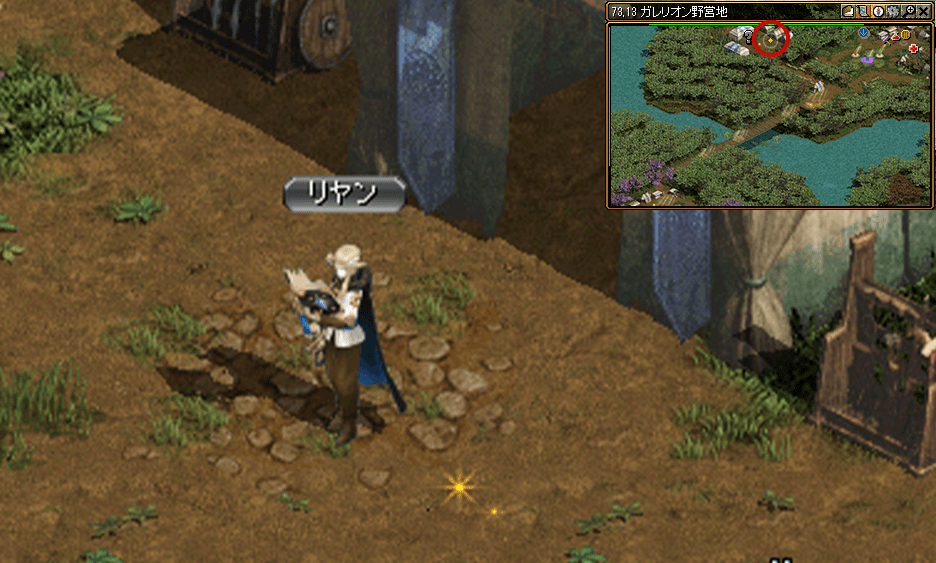